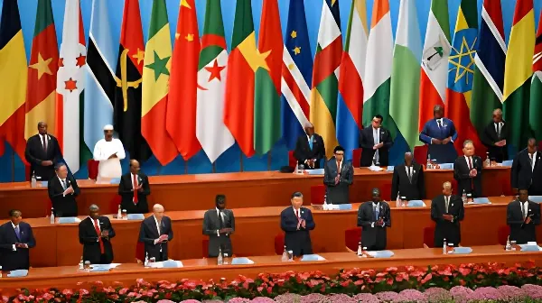

Depuis le 1er mai 2026, la Chine applique un tarif zéro sur l'ensemble des lignes douanières pour 53 pays africains. Une mesure annoncée progressivement depuis le sommet du FOCAC de septembre 2024, qui s'inscrit dans une stratégie de renforcement de l'influence chinoise sur le continent — mais qui ne dissimule pas un déficit commercial record de 102 milliards de dollars en faveur de Pékin.
La politique de tarif zéro entre la Chine et l'Afrique est le fruit d'un processus diplomatique conduit sur près de deux ans. En septembre 2024, lors du sommet de Pékin du Forum sur la coopération sino-africaine (FOCAC), Xi Jinping annonce la suppression totale des droits de douane pour les 33 pays africains classés parmi les pays les moins avancés (PMA) — mesure entrée en vigueur dès le 1er décembre 2024. Xi Jinping déclare alors que la Chine devient « le premier grand pays en développement et la première grande économie à prendre une telle mesure ».
En juin 2025, dans une lettre adressée à la réunion ministérielle de suivi du FOCAC à Changsha, Xi Jinping élargit l'annonce : le tarif zéro sera étendu à l'ensemble des 53 pays africains entretenant des relations diplomatiques avec Pékin, soit 20 pays à revenu intermédiaire supplémentaires (Kenya, Afrique du Sud, Nigeria, Égypte, Maroc...) jusqu'alors soumis à des droits pouvant atteindre 25 %. En février 2026, lors du 39e sommet de l'Union africaine, Xi Jinping confirme la date d'entrée en vigueur : le 1er mai 2026. La mesure est prévue pour deux ans, jusqu'au 30 avril 2028.
L'accélération du calendrier chinois n'est pas étrangère au contexte mondial. L'annonce de juin 2025 intervient alors que l'administration Trump multiplie les tarifs douaniers punitifs qui déstabilisent les chaînes d'approvisionnement mondiales, touchant y compris les pays africains. Pékin saisit l'opportunité de se positionner en défenseur du libre-échange et de la coopération Sud-Sud, face à un Occident perçu comme de plus en plus protectionniste.
Dans ce cadre, la Chine présente la mesure comme un « antidote » aux barrières tarifaires et non-tarifaires imposées par les États-Unis et l'Union européenne. Les autorités chinoises rappellent que des produits africains emblématiques — cacao ivoirien et ghanéen, café et avocats kényans, agrumes et vins sud-africains — étaient jusqu'alors soumis à des droits de douane variant de 8 % à 30 %. La suppression de ces barrières est ainsi présentée comme un geste de solidarité commerciale inédit.
Sommet du FOCAC à Pékin. Xi Jinping annonce la suppression des droits de douane pour les 33 PMA africains. La Chine promet également 50 milliards de dollars de soutien financier pour la période 2025-2027.
Entrée en vigueur du tarif zéro pour les 33 pays africains les moins avancés, sur 100 % des lignes tarifaires.
Xi Jinping, dans une lettre à la réunion FOCAC de Changsha, annonce l'extension du tarif zéro aux 53 pays africains ayant des relations diplomatiques avec Pékin — soit 20 pays à revenu intermédiaire supplémentaires.
Message de Xi Jinping au 39e sommet de l'Union africaine : la date du 1er mai 2026 est officiellement confirmée pour l'entrée en vigueur complète de la mesure.
Application effective du tarif zéro pour les 53 pays. Dès le premier jour, 24 tonnes de pommes sud-africaines franchissent les douanes chinoises à Shenzhen en bénéficiant du nouveau régime.
L'impact de la mesure ne sera pas uniforme selon les pays. Les économies africaines les plus structurées et industrialisées — Afrique du Sud, Maroc, Kenya, Égypte — disposent de bases productives et de réseaux d'exportateurs capables de saisir rapidement l'ouverture du marché chinois. Pour l'Afrique du Sud, les exportateurs d'agrumes, de vins et de produits à base d'aloès sont les premiers ciblés par ce régime préférentiel. Le ministre sud-africain du Commerce Parks Tau a salué cette « formidable opportunité », soulignant que « les produits expédiés en Chine en franchise de droits augmenteront ».
Les petites et moyennes entreprises (PME) africaines sont identifiées comme principales bénéficiaires potentielles. Lors d'un séminaire organisé à Nairobi par l'ambassade de Chine au Kenya intitulé « Zéro droit de douane, des opportunités infinies », des responsables kényans ont affirmé que le pays entendait saisir l'occasion pour améliorer la qualité de ses produits et son environnement des affaires. Néanmoins, les analystes soulignent que l'impact réel dépendra de la capacité des économies africaines à lever les obstacles structurels : logistique, certification qualité, accès au financement à l'export.
Derrière le geste diplomatique, les chiffres témoignent d'une asymétrie profonde. En 2025, les échanges sino-africains ont certes atteint un record de 348 milliards de dollars, en hausse de 17,7 % sur un an. Mais cette progression masque un creusement du déficit : les exportations chinoises vers l'Afrique ont bondi de 25,8 %, à 225 milliards de dollars, tandis que les importations chinoises en provenance du continent n'ont progressé que de 5,4 %, à 123 milliards de dollars. Le solde commercial défavorable à l'Afrique atteint ainsi un record de 102 milliards de dollars en 2025, en hausse de 64,5 % sur un an.
Cette asymétrie tient à la nature des échanges : les exportations africaines vers la Chine restent massivement concentrées sur quelques produits à faible valeur ajoutée — pétrole brut, cobalt, cuivre, lithium, cacao, café, coton. La réduction du déficit observée en 2024 (61,9 milliards) tenait surtout à la hausse des prix des matières premières, non à une diversification des exportations. La Banque africaine d'import-export (Afreximbank) a estimé dans un rapport de novembre 2025 que le continent ne pourra tirer pleinement parti du démantèlement tarifaire qu'en lançant des réformes structurelles profondes.
| Pays / Zone | Produits concernés | Enjeu principal |
|---|---|---|
| Afrique du Sud | Agrumes, vins, aloès | PME et exportateurs établis |
| Kenya | Café, avocats, fleurs | Diversification à l'export |
| Côte d'Ivoire / Ghana | Cacao, café | Transformation locale |
| Zimbabwe | Lithium transformé | Industrialisation minière |
| Nigeria / Angola | Pétrole, gaz | Impact marginal (déjà libre) |
| Maroc / Égypte | Produits manufacturés | Accès au marché de 1,4 Md pers. |
Pour Pékin, la suppression des droits de douane n'est pas un acte purement commercial. Elle s'inscrit dans une stratégie globale de construction d'un ordre économique multipolaire, dans lequel la Chine se positionne comme pivot incontournable du Sud global. En effaçant les barrières douanières, Pékin espère inciter des entreprises étrangères à investir dans des usines de transformation en Afrique — ce qui permettrait d'internaliser davantage de valeur ajoutée sur le continent tout en approfondissant l'intégration des chaînes de production africaines dans l'orbite chinoise.
L'initiative répond également aux critiques récurrentes sur le modèle économique sino-africain, accusé de reproduire une logique extractiviste : la Chine importe des matières premières brutes et exporte des produits manufacturés. En facilitant l'accès au marché pour des produits agricoles transformés ou semi-transformés, Pékin cherche à crédibiliser un discours de « coopération mutuellement bénéfique ». La mesure tarifaire est accompagnée du cadre financier du FOCAC 2024, qui prévoit 50 milliards de dollars de soutien sur la période 2025-2027, répartis en prêts concessionnels (29 Md$), aides directes (11 Md$) et investissements publics et privés (10 Md$), dans dix secteurs prioritaires allant des infrastructures à l'agriculture en passant par le numérique et la formation.
« La franchise douanière offrira sans aucun doute de nouvelles perspectives au développement de l'Afrique. »
— Xi Jinping, message au 39e sommet de l'Union africaine, février 2026La suppression des droits de douane chinois représente objectivement une ouverture commerciale sans précédent pour l'Afrique. Mais l'histoire des accords de libre-échange asymétriques invite à la prudence : l'accès préférentiel au marché n'engendre pas mécaniquement la diversification économique. La CNUCED rappelle que la plupart des pays africains exportent encore majoritairement des biens non transformés, faute de chaînes de valeur industrielles. La mesure court jusqu'au 30 avril 2028 — deux ans pour prouver que le continent peut transformer une ouverture tarifaire en levier d'industrialisation. Les pays qui sauront le faire — en améliorant qualité, logistique et certification — pourraient inverser durablement la tendance d'un déficit qui se creuse depuis des années. Les autres n'en tireront qu'un bénéfice marginal, pendant que le marché chinois continue d'inonder l'Afrique de produits manufacturés. La fenêtre est historique. Elle est aussi limitée dans le temps.